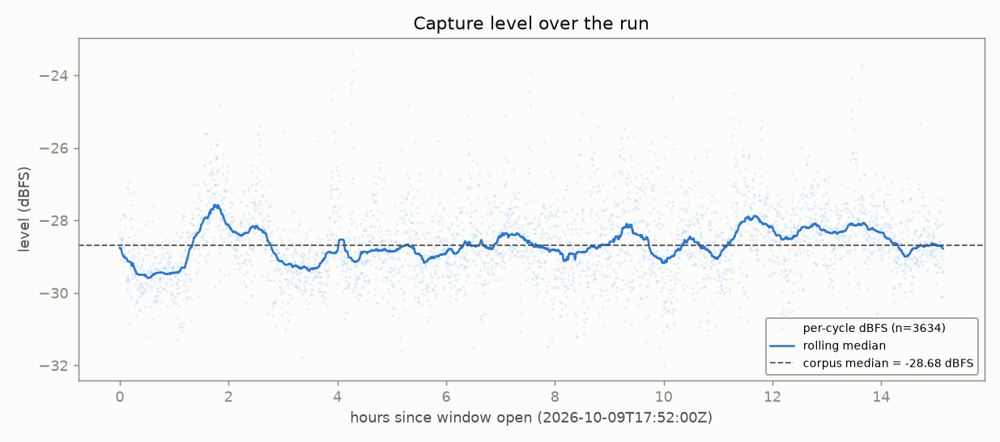
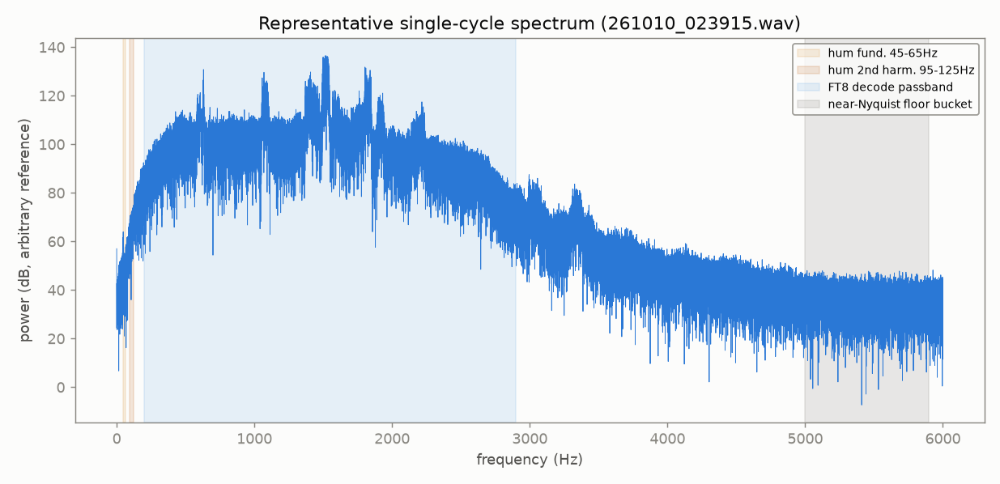
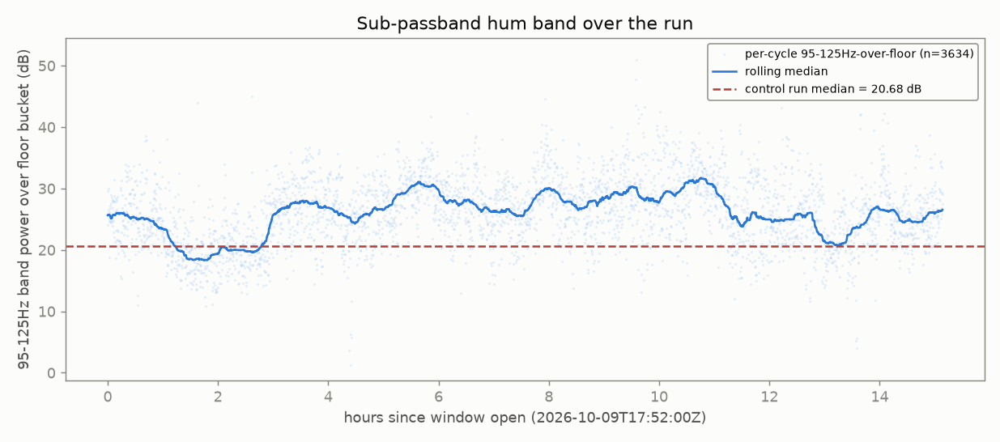
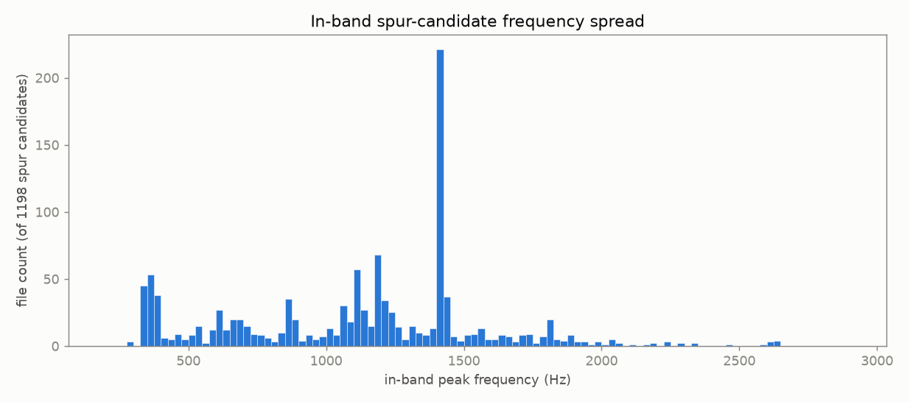
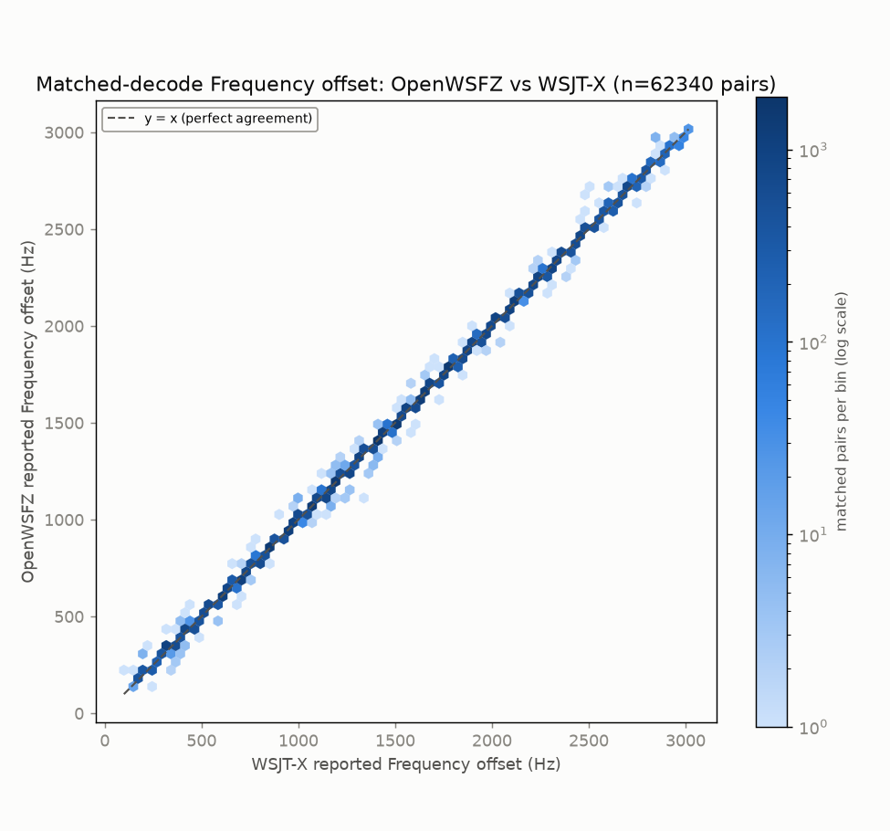
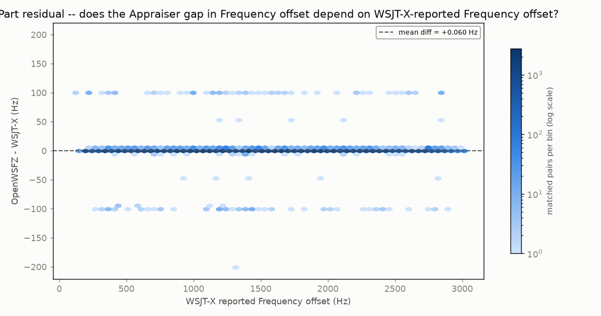
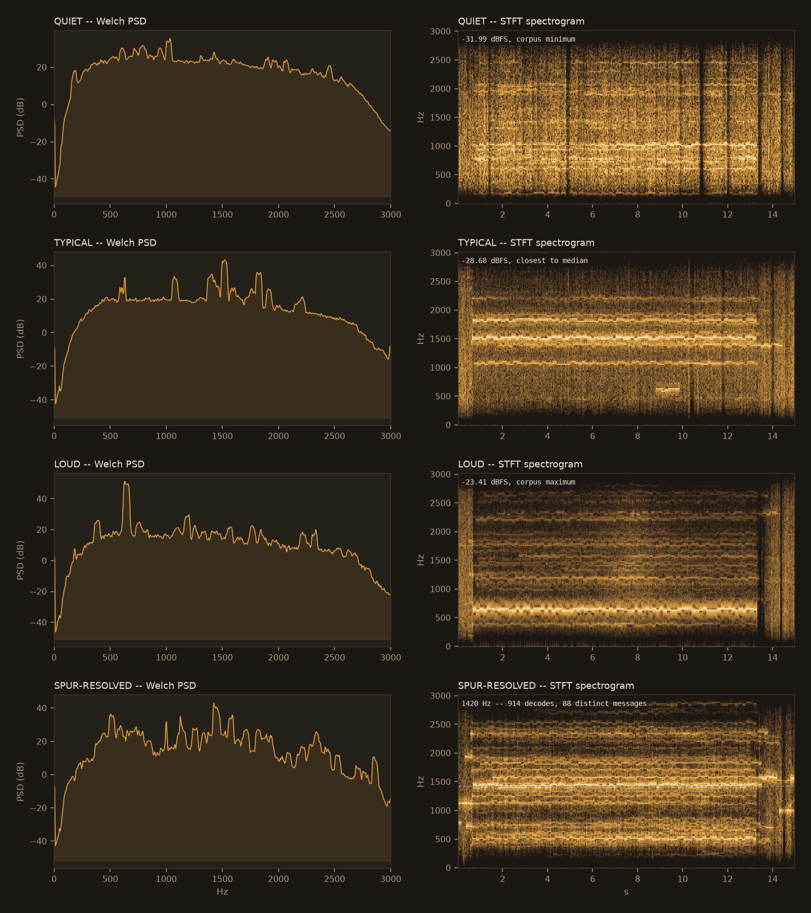

OpenWSFZ · QA final report · endurance run
Endurance Dossier
Standard post-endurance-run report: full-corpus spectral anomaly scan, complete matched-decode ANOVA, and the HK-036 historical trend read.
1 · Run completion & health
clean| Decode counts | OpenWSFZ | Reference | Matched |
|---|---|---|---|
| this window | 62,617 | 93,611 | 62,340 |
2 · Spectrum anomaly scan
run before the ANOVA comparison, per standing instructionEvery cycle WAV in owsfz/wav/ read in full, no subsampling. Script:
spectrum_scan.py + spectrum_scan_report.py.
| Check | Result |
|---|---|
| Files read / errors | 3,634 / 3,634 ok, 0 errors |
| Format consistency | 100% consistent |
| Clipping | 0 files |
| Dropouts / hot spikes | 0 / 0 files |
| Level | median -28.68 dBFS, MAD 0.65 dB |
| Sub-passband hum (45-125Hz) | 26.12 dB over floor (median) |
| In-band >40dB spur candidates | 1,198 files |
Level over the run

Representative single-cycle spectrum

261010_023915.wav.Sub-passband hum

In-band spur candidates

3 · ANOVA — matched-decode metrics
recomputed directly from both ALL.TXT filesTwo-way ANOVA without replication over 62,340 matched pairs. Recomputed here via
anova_common.py (the same module the standard report uses), not parsed from
rendered markdown.
Grid-alignment gate
| Appraiser | Unique ts | On-grid | G | Row | Verdict |
|---|---|---|---|---|---|
| OpenWSFZ | 3,630 | 3,630 | 1.0000 | ROW 1 | PASS |
| Reference | 3,628 | 3,628 | 1.0000 | ROW 1 | PASS |
Decode coverage
| Metric | Value |
|---|---|
| OpenWSFZ decodes | 62,617 |
| Reference decodes | 93,611 |
| Matched pairs | 62,340 (99.6% of OpenWSFZ, 66.6% of reference) |
SNR (dB)
| Source | SS | df | MS | F | P |
|---|---|---|---|---|---|
| Part | 7081112.954 | 62339 | 113.590 | 9.726 | 0.0000 |
| Appraiser | 325079.807 | 1 | 325079.807 | 27835.456 | 0.0000 |
| Residual (confounded w/ interaction, n=1/cell) | 728033.693 | 62339 | 11.679 | not recorded | not recorded |
| Total | 8134226.454 | 124679 | not recorded | not recorded | not recorded |
Appraiser means: OpenWSFZ -7.8612 dB, Reference -4.6318 dB, grand mean -6.2465 dB.


DT (time offset) (s)
| Source | SS | df | MS | F | P |
|---|---|---|---|---|---|
| Part | 20087.407 | 62339 | 0.322 | 255.412 | 0.0000 |
| Appraiser | 13200.088 | 1 | 13200.088 | 10462950.896 | 0.0000 |
| Residual (confounded w/ interaction, n=1/cell) | 78.647 | 62339 | 0.001 | not recorded | not recorded |
| Total | 33366.142 | 124679 | not recorded | not recorded | not recorded |
Appraiser means: OpenWSFZ 0.8480 s, Reference 0.1972 s, grand mean 0.5226 s.


Frequency offset (Hz)
| Source | SS | df | MS | F | P |
|---|---|---|---|---|---|
| Part | 60945347309.040 | 62339 | 977643.968 | 60814.629 | 0.0000 |
| Appraiser | 111.051 | 1 | 111.051 | 6.908 | 0.0086 |
| Residual (confounded w/ interaction, n=1/cell) | 1002149.449 | 62339 | 16.076 | not recorded | not recorded |
| Total | 60946349569.540 | 124679 | not recorded | not recorded | not recorded |
Appraiser means: OpenWSFZ 1484.1835 Hz, Reference 1484.1238 Hz, grand mean 1484.1536 Hz.


Caveat (structural, not a defect): with one observation per Part×Appraiser cell, the interaction term and the residual/error term are mathematically confounded for every response above -- the standard property of an unreplicated factorial design. Cross-run comparison and interpretation is Architect/Captain territory, not this pipeline's.
4 · Spectral trace
QA diagnosticRepresentative cycles chosen mechanically from the full-corpus scan: quietest, loudest, closest-to-median, and (if the spur-resolve step above found and confirmed a dominant in-band peak) the cycle that produced it.

5 · Historical trend (HK-036 Section 4 read)
6 runs on recordG is the grid-alignment gate (ROW 1 PASS ≥ 0.99). Non-comparable and
drift-contaminated rows are footnoted, never pooled. Never pool different nhard
values or different bands.
| Date | Band | Hrs | Shim | nhard | Ref. | Radio chain | G | Matched | Matched % ref | OWS-only % | SNR gap | DT gap |
|---|---|---|---|---|---|---|---|---|---|---|---|---|
| 2026-09-22 | 40m | 12.0 | 20260054 | 40 | live_wsjtx | Yaesu FT-991A -> Voicemeeter Out B1 | 1.0000 | 55,010 | 59.8 | 0.8 | -2.824 | +0.6548 |
| 2026-09-23 | 40m | 24.0 | 20260054 | 40 | live_wsjtx | FT-991A -> Microphone (2- USB Audio CODEC), DIRECT (Voicemeeter/CABLE out of the loop for this arm) | 1.0000 | 97,279 | 61.1 | 0.7 | -3.225 | +0.6484 |
| 2026-09-25 | 40m | 12.0 | 20260054 | 40 | live_wsjtx | FT-991A -> Microphone (2- USB Audio CODEC), DIRECT (Voicemeeter/CABLE out of the loop for this arm) | 1.0000 | 46,917 | 60.9 | 0.6 | -2.638 | +0.6511 |
| 2026-09-30 | 40m | 17.9 | 20260056 | 40 | live_wsjtx | Yaesu FT-991A -> Voicemeeter Out B1 [SUB-FEAS flag ON, 8 workers: NOT poolable with flag-OFF rows] | 1.0000 | 94,307 | 72.8 | 1.1 | -1.546 | +0.6611 |
| 2026-10-04 | 40m | 12.93 | 20260058 | ? | live_wsjtx | FT-991A -> Stereo Input 1 (USB 2 Audio CODEC) -> Voicemeeter B1 -> OpenWSFZ + WSJT-X [SUB-FEAS flag ON, 8 workers, early decode ON; nhard 40 per config.json (arm_config recorded null): NOT poolable with flag-OFF rows] | 1.0000 | 68,387 | 70.3 | 1.1 | -2.280 | +0.6588 |
| 2026-10-09 (this run) | 40m | 15.13 | 20260061 | 24 | live_wsjtx | FT-991A direct USB CODEC (Microphone (2- USB Audio CODEC)), no Voicemeeter | 1.0000 | 62,340 | 66.6 | 0.4 | -3.229 | +0.6508 |